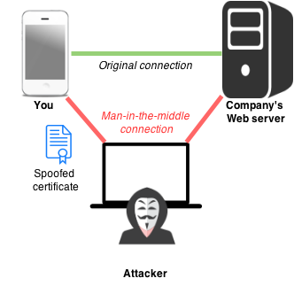
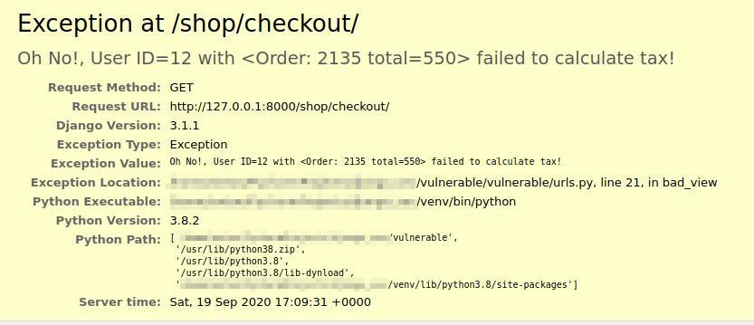
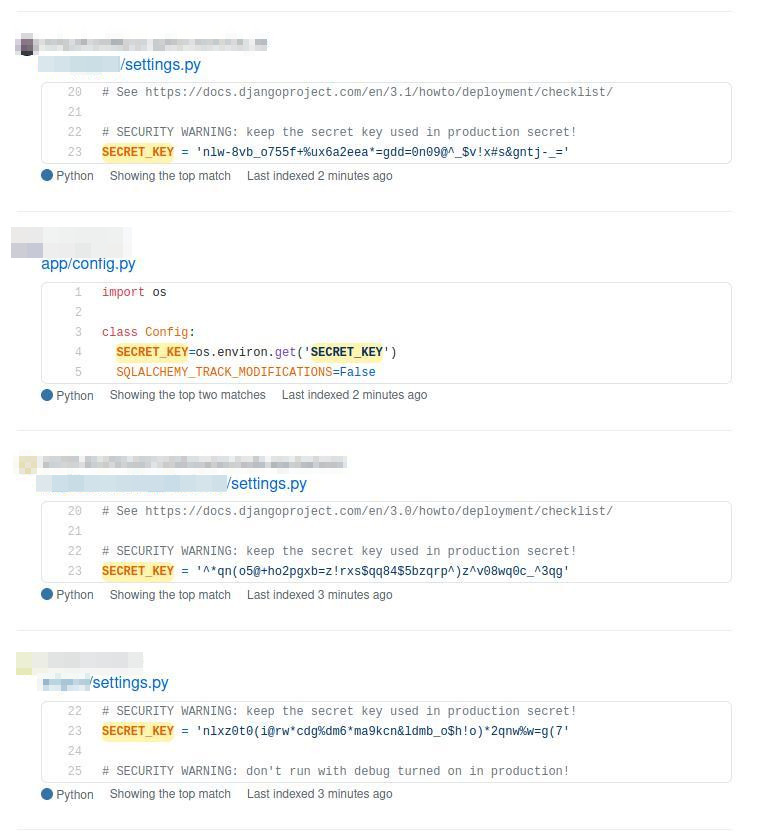
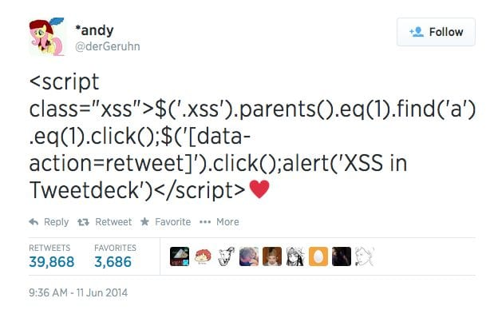
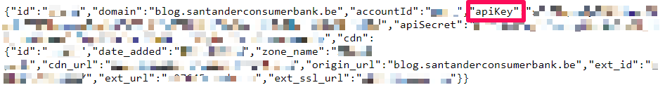

10 Steps For More Secure Web Applications
Anton Alekseev for Pycon Estonia 2020

Anton Alekseev
Tech Lead and Fullstack Developer at Thorgate
Disclaimer: not a professional security expert
- GitHub: @aalekseev
- Twitter: @anton_alekseev
Famous Breaches in 2020
- January 22, 2020 - Microsoft 280 000 000 customer records leaked
- March 5, 2020 - T-Mobile - addresses, social security numbers, financial account information and more
- April 13, 2020 - San Francisco International Airport - logins and passwords of users SFOConnect.com and SFOConstruction.com
- April 14, 2020 - Zoom - 500 000 accounts found on sale on the dark web
- April 21, 2020 - Facebook - 267 000 000 profiles went on sale on the dark web
- April 27, 2020 - Nintendo - 160 000 player accounts got stolen
- May 4, 2020 - GoDaddy - 24 000 logins and passwords exposed
- June 23, 2020 - Twitter - business users data exposed
- August 20, 2020 - Instagram, TikTok & Youtube - database with 235 000 000 accounts exposed online
- ... and more
What is Security?
SECURITY DOES NOT EXIST
Image from Pixabay
It is a job for only security professionals
- Staff, Sales, Marketing - use strong passwords, know about phishing
- Developers - know about vulnerabilities and follow security practices
- Engeneering Managers - schedule secure audits
- Project Managers - work with client to avoid changes that will introduce security risks
Security is too complex to learn about
My framework will protect me from all security threats
10 Steps
- Use secure connection
- ?
- ?
- ?
- ?
- ?
- ?
- ?
- ?
- ?
1. Use secure connection (for everything)
1. Use secure connection for everything (fix)
- Ensure that SSL sertificates are not expired (have a notification when it is)
- Ensure that on load-balancer or proxy serving all requests via secure connection. Also check out
SECURE_SSL_REDIRECTDjango setting - Ensure that every image, javascript and stylesheet are server under secure connection as well
- Ensure that if your application communicate with third-party API it uses a secure connection
- If your application needs to transfer files via FTP, prefer using SFTP
10 Steps
- Use secure connection
- Configure software with security in mind
- ?
- ?
- ?
- ?
- ?
- ?
- ?
- ?
2. Configure software with security in mind
2. Configure software with security in mind (fix)
$ python manage.py check --deploy
System check identified some issues:
WARNINGS:
?: (security.W004) You have not set a value for the SECURE_HSTS_SECONDS setting. If your entire site is served only over SSL, you may want to consider setting a value and enabling HTTP Strict Transport Security. Be sure to read the documentation first; enabling HSTS carelessly can cause serious, irreversible problems.
?: (security.W008) Your SECURE_SSL_REDIRECT setting is not set to True. Unless your site should be available over both SSL and non-SSL connections, you may want to either set this setting True or configure a load balancer or reverse-proxy server to redirect all connections to HTTPS.
?: (security.W012) SESSION_COOKIE_SECURE is not set to True. Using a secure-only session cookie makes it more difficult for network traffic sniffers to hijack user sessions.
?: (security.W016) You have 'django.middleware.csrf.CsrfViewMiddleware' in your MIDDLEWARE, but you have not set CSRF_COOKIE_SECURE to True. Using a secure-only CSRF cookie makes it more difficult for network traffic sniffers to steal the CSRF token.
?: (security.W018) You should not have DEBUG set to True in deployment.
?: (security.W020) ALLOWED_HOSTS must not be empty in deployment.
System check identified 6 issues (0 silenced).
10 Steps
- Use secure connection
- Configure software with security in mind
- Don't commit secrets to the repository
- ?
- ?
- ?
- ?
- ?
- ?
- ?
3. Don't commit secrets to the repository
2 600 000 results on GitHub containing "SECRET_KEY" word
3. Don't commit secrets to the repository (fix)
- Create a new secret key
- Use environment variables to store it
- For Django we use Django-environ
- Remove the old secret key from Git history (if possible)
- Requires to mess around with Git reflog and might be dangerous
- Redeploy the application
10 Steps
- Use secure connection
- Configure software with security in mind
- Don't commit secrets to the repository
- Check application dependencies
- ?
- ?
- ?
- ?
- ?
- ?
4. Check application dependencies
- №9 in OWASP Top 10 - Using Components with Known Vulnerabilities
- Aug 2020, Malicious JS library that was stealing sensitive files removed from NPM

4. Check application dependencies (fix)
(venv) ➜ django_app safety check --full-report
+==============================================================================+
| REPORT |
| checked 40 packages, using default DB |
+============================+===========+==========================+==========+
| package | installed | affected | ID |
+============================+===========+==========================+==========+
| insecure-package | 0.1.0 | <0.2.0 | 25853 |
+==============================================================================+
| This is an insecure package with lots of exploitable security |
| vulnerabilities. |
+==============================================================================+
| django | 1.11 | <1.11.19,>=1.11.0 | 36885 |
+==============================================================================+
| Django 1.11.x before 1.11.19 allows Uncontrolled Memory Consumption via a |
| malicious attacker-supplied value to the django.utils.numberformat.format() |
| function. |
+==============================================================================+
10 Steps
- Use secure connection
- Configure software with security in mind
- Don't commit secrets to the repository
- Check application dependencies
- Make it harder for attackers to guess about your application
- ?
- ?
- ?
- ?
- ?
5. Make it harder for attackers to guess about your application
- Can you guess how many users in the system, given that you registered just now?
https://mysite.com/api/v1/profile/users/21/ - Can you guess the admin login page?
https://mysite.com/admin/ - Can you guess the admin email?
admin@mysite.com
5. Make it harder for hackers to guess about your application (fix)
- Change the default admin dashboard url
- Use other references for objects than ID from the database
- Check that you are not leaking in plain text information about your system in error messages, logs, emails
10 Steps
- Use secure connection
- Configure software with security in mind
- Don't commit secrets to the repository
- Check application dependencies
- Make it harder for attackers to guess about your application
- Research and use the tools that already available
- ?
- ?
- ?
- ?
6. Research and use the tools that already available
- Run django deploy check
python manage.py check --deploy - Manage user access with
user_passes_testandpermission_requred - Manage allowed methods with
require_safe,require_POST - When you need to compare two strings securely use
constant_time_compare - When you need to securely sign some data and verify it later, use
signingmodule - To prevent sensitive data being leaked into application logs, use
sensitive_variablesdecorator - To protect POST paramethers being leaked into application logs, use
sensitive_post_paramethersdecorator - If you need to render JSON to template use
json_script
10 Steps
- Use secure connection
- Configure software with security in mind
- Don't commit secrets to the repository
- Check application dependencies
- Make it harder for attackers to guess about your application
- Research and use the tools that already available
- Use automatic tools to check your application
- ?
- ?
- ?
7. Use automatic tools to check your application
10 Steps
- Use secure connection
- Configure software with security in mind
- Don't commit secrets to the repository
- Check application dependencies
- Make it harder for attackers to guess about your application
- Research and use the tools that already available
- Use automatic tools to check your application
- Don't trust user input and sanitize it
- ?
- ?
8. Don't trust user input and sanitize it
- №1 in OWASP Top 10 - Injection
- №4 in OWASP Top 10 - XML External Entities (XXE)
- №7 in OWASP Top 10 - Cross-Site Scripting XSS
- №8 in OWASP Top 10 - Insecure Deserialization
Not all users are nice.
8. Don't trust user input and sanitize it (XSS)
8. Don't trust user input and sanitize it (XSS prevention)
- From Django 1.0 - template system by default escapes html code
- Fromt Django 2.1 you can use
json_scriptto add JSON safely into template - If you can, use markdown instead of raw HTML to provide users with reach text editor
- But other than that - check your templates for user input and if it was marked as safe (in which case it is UNsafe)
8. Don't trust user input and sanitize it (SQLi)
First attack Feb 2002 (18 years ago)
Recent one - August 2020, Freepick SQL injection 83 000 000 user records stolen

8. Don't trust user input and sanitize it (SQLi example)
# Malicious SQL code, will return all rows from the
# db table regardless of initial filter in your SQL code
user_input = '"" or 1 = 1;--'
# BAD
# Note that we are formatting the string here, before passing it to Django
Customers.objects.raw(
f'SELECT * FROM Customers WHERE customer_name = {user_input}'
)
# BETTER
# Note that here we passing malicious output to the Django,
# rather than formatting the SQL code ourself.
# Postgres is smart enough to escape malicious input and not evaluate it.
Customers.objects.raw(
'SELECT * FROM Customers WHERE customer_name = %s',
[user_input]
)
8. Don't trust user input and sanitize it (SQLi prevention)
- Use Django ORM
user_input = '"" or 1 = 1;--' Customers.objects.filter(customer_name=user_input) - If you can't - pass argumets instead of formatting the string
user_input = '"" or 1 = 1;--' Customers.objects.raw('SELECT * FROM Customers WHERE customer_name = %s', [user_input]) - Run automatic tools regularly to be notified about unprotected SQL formatiing
10 Steps
- Use secure connection
- Configure software with security in mind
- Don't commit secrets to the repository
- Check application dependencies
- Make it harder for attackers to guess about your application
- Research and use the tools that already available
- Use automatic tools to check your application
- Don't trust user input and sanitize it
- Protect user data by requesting only what necessary
- ?
9. Protect user data by requesting only what necessary
9. Protect user data by requesting only what necessary (example)
# BAD
class UserProfileSerializer(serializers.ModelSeriazlier):
class Meta:
model = UserProfile
fields = "__all__"
# BETTER
class UserProfileSerializer(serializers.ModelSeriazlier):
class Meta:
model = UserProfile
# Note that we explicitly saying which data will
# be exposed in the application API
fields = ("profile_pic", "job_title")
9. Protect user data by requesting only what necessary (preventing)
Django nor any automated tool can protect you from making mistakes here.
However these basic things can help:
- Carefuly decide what data will be exposed in API
- Mask the data in the API if possible
- Don't store sensitive data "just in case"
- Make sure that if you are collecting sensitive data it is encrypted
- All sensitive data should be transmitted only via secure connection
- Disable caching for responses that contain sensitive data
10 Steps
- Use secure connection
- Configure software with security in mind
- Don't commit secrets to the repository
- Check application dependencies
- Make it harder for attackers to guess about your application
- Research and use the tools that already available
- Use automatic tools to check your application
- Don't trust user input and sanitize it
- Protect user data by requesting only what necessary
- Disallow everything, and granually add permissions as they are required
10. Disallow everything, and granually add permissions as they are required
Authenticated vs Authorized
Photo by Jonathon Young on Unsplash10. Disallow everything, and granually add permissions (example)
# BAD
def transfer_money_view(request):
if not request.user.is_authenticated:
raise PermissionDenied
form = TransferMoneyForm(request.GET or request.POST)
if form.is_valid():
form.save()
return HttpResponseRedirect(reverse("home"))
# BETTER
def transfer_money_view(request):
if not request.user.is_authenticated:
raise PermissionDenied
# Note that we also check that user
# allowed to make the action
if not canTransferMoney(request.user):
raise PermissionDenied
form = TransferMoneyForm(request.GET or request.POST)
if form.is_valid():
form.save()
return HttpResponseRedirect(reverse("home"))
10. Disallow everything, and granually add permissions (preventing)
- Properly apply access permissions by creating specific user roles and checking allowed actions for each user
- Make testing user permissions a regular activity, so you would know when acess control is actually broken
- Follow the simple motto that it is best to disallow everything, and granually add permissions for different user roles
STEP 0
Make security checks a reccuring activity
What Next?
- Cache poisoning
- DNS rebinding
- Content sniffing
- Cryptography, SSL
- JWT manipulation
- Server-side template injection
- Malicious uses of Unicode and ASCII
- Timing and other side-channel attacks
- Many more
Additional Resources
Thank you!
People who made this talk possible by actively talking about security on various conferences:
- Anthony Shaw
- Jacinda Shelly
- Jacob Kaplan-Moss
- James Bennett
- Philip James
- Red and Black Tech
Madis Petersoo & Karl Õkva for giving feedback